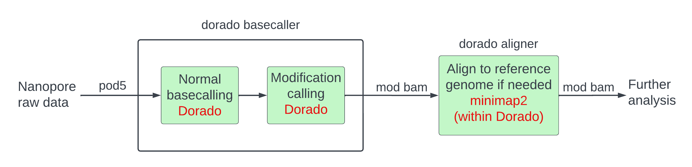

Assignment 5: Nanopore base modifications
For this assignment, we will perform differential methylation analysis using single-molecule direct DNA methylation detection from Nanopore sequencing. We will use data generated via Cas9-targeted Nanopore sequencing (nCATS) to compare the methylation profiles of a normal breast epithelial cell line (MCF-10A) against a highly aggressive triple-negative breast cancer cell line (MDA-MB-231). The files used for the assignment and their SRA accessions are summarized in the following table:
| Cell Line | Status | Library | SRA accession |
|---|---|---|---|
| MCF-10A | Normal breast epithelial | MinION nCATS (10 gene panel) | SRX7698109 |
| MDA-MB-231 | Breast cancer (TNBC) | MinION nCATS (10 gene panel) | SRX7698110 |
The original reference paper for this dataset:
- Gilpatrick, T., Lee, I., Graham, J.E. et al. Targeted nanopore sequencing with Cas9-guided adapter ligation. Nat Biotechnol 38, 433–438 (2020). https://doi.org/10.1038/s41587-020-0407-5
The authors developed a targeted enrichment strategy that yields extremely high sequencing coverage over specific cancer-associated loci, allowing for highly accurate, native DNA methylation profiling without the need for bisulfite conversion.
We will process the raw Nanopore signal data to identify Differentially Methylated Regions (DMRs) linked to cancer development, specifically focusing on the GSTP1 and KRT19 genes.
Learning objectives
At the end of this week’s assignment you will be able to:
- Be familiar with single-molecule direct DNA methylation detection
- Methylation aware asecalling from Nanopore raw signal
- Be able to extract methylation levels from BAM files
- Know how to visualize methylation data
- Be able to identify differentially methylated regions (DMRs)
Input and outputs
The input for this assignment are the fast5 files generated by Nanopore from normal breast tissue (MCF-10A cell line) and Triple-Negative Breast Cancer (MDA-MB-231 cell line). This dataset was generated using Cas9-targeted Nanopore sequencing (nCATS), and Cas9 was used to cut and enrich specific genes before sequencing. This data is publicly available with accession number PRJNA531320.
fast5 files:
/project2/msalomon_1816/trgn_515/5_base_mods/fast5
You can download the data from here as well:
Normal sample:
wget https://sra-pub-src-1.s3.amazonaws.com/SRR11047866/TG_02_Mcf10a_brPanel_MinION_fast5.tgz.2
Tumor sample:
wget https://sra-pub-src-1.s3.amazonaws.com/SRR11047865/TG_03_MdaMb231_brPanel_MinION_fast5.tgz.2
Required software
In order to complete the assignment, you can use this conda environments I prepared:
conda activate /project2/msalomon_1816/trgn_515/conda_env/trgn515Bioinformatics workflow

Converting fast5 to pod5 format
The two most common ONT raw signal file formats are:
- Fast5 is the original raw signal data from ONT. This file format has been replaced, but it’s still found in many ONT runs done before 2022. For a comprehensive guide on the fast5 format: https://hasindu2008.github.io/slow5specs/fast5_demystified.pdf
- Pod5 is the new ONT format, based on Apache arrow-columnal format. More information here: https://pod5-file-format.readthedocs.io/en/0.3.2/SPECIFICATION.html
New softare works better (and sometimes even requires!) pod5 files, so the first thing we are going to do is to transformed our fast5 files into pod5. ONT provides the software pod5 to do exactly this:
conda activate /project2/msalomon_1816/trgn_515/conda_env/pod5
pod5 convert fast5
-t $SLURM_CPUS_PER_TASK # Multithreading
-r # Search files recursively
--output /path/to/pod5/data.pod5 # Output Pod5
/path/to/fast5/ # Folder with fast5Basecalling with Dorado
Dorado is the current ONT basecaller. It is optimized to run in GPU, especially Nvidia A100 and H100 GPU cards. To request an interactive GPU in CARC:
salloc --partition=gpu --ntasks=1 --gpus-per-task=a100:1 --mem=30G --time=1:00:00You will also need to load some modules from the CUDA toolkit. To do that:
module load gcc/13.3.0
module load cuda/12.6.3For more information on GPU programming in CARC, visit https://www.carc.usc.edu/user-guides/advanced-hpc-programming/gpu-programming
conda activate /project2/msalomon_1816/trgn_515/conda_env/trgn515
dorado_bin=/project2/msalomon_1816/trgn_515/5_base_mods/dorado-0.9.6/bin/dorado
reference=/project2/msalomon_1816/trgn_515/5_base_mods/ref_genome/genome.fa
pod5_dir=/path/to/pod5
bam_dir=/path/to/bam
# The path to the model for basecalling
model_dir=/project2/msalomon_1816/trgn_515/5_base_mods/dorado-0.9.6/models/dna_r9.4.1_e8_sup@v3.3
# The path to the model for modified bases basecalling
mod_model_dir=/project2/msalomon_1816/trgn_515/5_base_mods/dorado-0.9.6/models/dna_r9.4.1_e8_sup@v3.3_5mCG_5hmCG@v0
# We need to use an older version of dorado for this dataset, and for that we need to build a container to make it work in our CARC cluster
module load apptainer # Loading Apptainer to build the container
# The Apptainer wrapper (using Ubuntu 22.04 to guarantee glibc compatibility)
# --nv tells it to use the cluster's GPUs
# --bind makes sure the container can see your /project2 files
dorado="apptainer exec --nv --bind /project2:/project2 docker://ubuntu:22.04 $dorado_bin"
$dorado basecaller $model_dir $pod5_dir/file.pod5 -v --reference $reference --mm2-opts "-x asm10" --modified-bases-models $mod_model_dir > $bam_dir/file.bam
# You already know how to do the next two steps!
samtools sort ...
samtools index ...Task 1: Basecalling with modified bases
- What is the output of the basecalling when using modified bases? (5pts)
- Why do you think they have chosen this file type? (5pts)
- What are the tags that represent methylation, and what do each of them mean? (5pts)
- In our Dorado command, we passed the argument
-r sup,5mCG_5hmCG. What doessupand5mCG_5hmCGmean? (10pts) - Why have we chosen
5mCG_5hmCGfor a human dataset? (10pts)
Mapping to the reference genome
We have already aligned our reads to the reference genome, but if you hadn’t done this, you would need to convert your SAM file into fastq.
samtools fastq -@ 5 -T "*" $bam_dir/M13363.sam > /path/to/fastq/M13363.fastqOnce we have fastq files, we can map them with minimap.
reference=/project2/biodb/genomes/Homo_sapiens/NCBI/GRCh38/Sequence/WholeGenomeFasta/genome.fa
minimap2 -ax splice \
-y
$reference /path/to/fastq/M13363.fastq | \
samtools sort -o $bam_dir/M13363.bam -Task 2: Mapping modified reads.
- What does the -T flag in
samtools fastqdo and why is it important? (5pts) - What does the -y (lower case!) flag in
minimap2do and why is it important? (5pts)
Extract modified base information from BAM file
We are going to use ModKit to analyze methylation data. The pileup subcommand runs through all sites or motifs and generates a probability that the site is modified.
You need to run this both for your normal and tumor samples.
modkit=/project2/msalomon_1816/trgn_515/5_base_mods/modkit-0.6.1/modkit
reference=/project2/biodb/genomes/Homo_sapiens/NCBI/GRCh38/Sequence/WholeGenomeFasta/genome.fa
$modkit pileup
--cpg # Restrict analysis to CpG sites
--combine-strands # Combine methylation for the forward and reverse strand
--reference <reference.fa> # Reference genome
--modified-bases 5mC 5hmC # Specified the inferred modified bases
<file.bam> # Input BAM file
<file.bed> # Output bed file
bgzip -k <file.bed> # Note you can also pipe the output of modkit into bgzip
tabix -p bed <file.bed.gz>The modkit software allows for filtering of methylation calls using --filter-threshold for general filtering and --mod-thresholds for modified base filtering.
You can find the modified codes in Table 1. If no thresholds are specified, ModKit will calculate the appropiate threshold by taking a sample of the BAM file and calculating the 10th percentile of the probability distribution.
Table 1: Modified Base codes (source: https://samtools.github.io/hts-specs/SAMtags.pdf)
| Unmodified base | Code | Abbreviation | Name | ChEBI |
|---|---|---|---|---|
| C | m | 5mC | 5-Methylcytosine | 27551 |
| h | 5hmC | 5-Hydroxymethylcytosine | 76792 | |
| f | 5fC | 5-Formylcytosine | 76794 | |
| c | 5caC | 5-Carboxylcytosine | 76793 | |
| C | Ambiguity code | any C mod | - | |
| T | g | 5hmU | 5-Hydroxymethyluracil | 16964 |
| e | 5fU | 5-Formyluracil | 80961 | |
| b | 5caU | 5-Carboxyluracil | 17477 | |
| T | Ambiguity code | any T mod | - | |
| U | U | Ambiguity code | any U mod | - |
| A | a | 6mA | 6-Methyladenine | 28871 |
| A | Ambiguity code | any A mod | - | |
| G | o | 8oxoG | 8-Oxoguanine | 44605 |
| G | Ambiguity code | any G mod | - | |
| N | n | Xao | Xanthosine | 18107 |
| N | Ambiguity code | any mod | - |
Task 3: Make a pileup of the methylation calls
Let ModKit calculate the filtering thresholds.
The output of this analysis is a bedMethyl file, which it’s just a normal bed file with some extra columns.
- What are the columns of the resulting file? Visit https://github.com/nanoporetech/modkit for more information (5pts)
- Can you think on some filters that may be important given the provided columns? (5pts)
- Open the resulting BED file and look at the first few rows. How many rows are generated for each single genomic position, and what specific column differentiates them? Based on our ModKit command, why is the file structured this way? How many rows do you expect per genomic position? (5pts)
- Look at column 11 (fraction modified). If a genomic region is fully methylated on both alleles, you would expect a value near 100%. What biological scenario would result in a fraction of ~50%? (5pts)
- What column would you use to identify different methylation patterns in each allele? How would a heterozygous methylation pattern look like? (5pts)
- Why do we run
bgzipandtabixon the resulting BED file before moving to the next step? What do these tools do? (5pts)
Differential methylation analysis (DMR)
In differential methylation analysis, we perform a statistical test (eg: t-test) to find differences in methylation patterns between samples (eg: normal vs tumour).
We will stay within ModKit, which uses a binomial distribution to find differential methylation. In our example, we have a cancer/normal pair.
Analyze modified bases at specific locations
If you are not interested in genome wide methylation patterns, it may be handy to subset methylation in specific regions. For human, common regions of interest would be CpG islands.
You can get a list of CpG islands from the UCSC genome browser:
wget -qO- http://hgdownload.cse.ucsc.edu/goldenpath/hg38/database/cpgIslandExt.txt.gz \
| gunzip -c \
| awk 'BEGIN{FS="\t"; OFS="\t"} NR>1 {print $2, $3, $4, $5}' \
| bedtools sort -i - > cpg_islands_ucsc.bedBecause we are working with a targeted sequencing panel rather than Whole Genome Sequencing, we do not want to scan the entire genome or every single CpG island. Instead, we will restrict our analysis to the specific genes targeted by our panel.
You can find those genes in this bed file:
regions=/project2/msalomon_1816/trgn_515/5_base_mods/bed/gene_targets.bedNow, we can pass this target file to modkit dmr pair using the -r flag. This will extract the methylation probabilities from both of our pileup files and calculate the statistical difference only at these specific loci.
regions=/project2/msalomon_1816/trgn_515/5_base_mods/bed/gene_targets.bed
reference=/project2/biodb/genomes/Homo_sapiens/NCBI/GRCh38/Sequence/WholeGenomeFasta/genome.fa
$modkit dmr pair
-a ${norm_pileup}.gz # Bed with methylation from sample 1
-b ${tumor_pileup}.gz # Bed with methylation from sample 2
-o <out_file.bed> # Output to stdout if not present
-r ${regions} # List of regions in BED format
--ref <reference.fa> # Reference genome
--base C # may be repeated if multiple modifications are being used
--threads <n_threads> # Number of threadsTask 4: Interpreting the DMR Output
Review the resulting bed file and consult the ModKit documentation if necessary.
The modkit DMR output format is detailed here: https://nanoporetech.github.io/modkit/intro_dmr.html
- Which are the two genes with the higuest differences? Which gene shows hypermethylation (increased methylation) and which shows hypomethylation (decreased methylation) in the tumor sample compared to the normal sample? Which columns did you use to determine this? (10pts)
- Which of the previous two genes is most likely a tumor supressor gene and which one is most likely an oncogene? How is this related to their methylation pattern? (10pts)
- Compare the results for KRT19 and GPX1. Both have high statistical scores (significance), but how do their effect_size values differ? Which one should we prioritize when looking for drivers of disease? Which one is more likely to be a statistical artifact? (5pts)
- Why is it statistically more robust to calculate differential methylation across a region (like a CpG island or promoter) rather than looking at individual, isolated cytosines? (5pts)
- In this analysis, the coordinates used for the DMR covered the entire gene body for each gene. Explain why measuring average methylation changes across an entire entire gene might not be the most appropiate method for identifying biologically meaningful changes, and propose a better approach. (5pts)
Visualize modified bases on IGV
A good way to validate the variants (or methylation in this case) detected is to visually check the alignment. The standard software to do this is Integrative Genomics Viewer (IGV).
To visualize modified bases in IGV, follow this instructions:
- Load the reference genome
- Open IGV.
- In the top-left dropdown menu, ensure you have the correct reference genome selected (e.g., Human hg38). If it is not listed, click Genomes > Select Hosted Genome and search for it.
- Load your BAM files
- Go to File > Load from File
- Select your Normal and Tumor BAM files and click open. (Note: Make sure your .bam.bai index files are located in the exact same folder on your computer as your .bam files, otherwise IGV will throw an error).
- Enable base modification colors
- By default, IGV colors reads gray and only highlights mutations/SNPs. We need to tell it to look for the MM and ML methylation tags instead.
- Right-click anywhere in the main alignment track for any of the alignments.
- In the pop-up menu, hover over Color alignments by and select Base modification (2-color).
- Repeat this exact same process for the other alignment track.
- Step 4: Navigate to specific genomic coordinates
- Use the search bar at the top to type in a gene name (eg: KRT19) or genomic coordinate (chr:st-end) and hit Enter.
- Once the reads load, you will see specific cytosine bases light up in color:
- Red: Hypermethylated (The sequencer is highly confident a methyl group is present).
- Blue: Hypomethylated (The sequencer is highly confident the base is unmethylated).
- Gray/Transparent: The sequencer lacked the confidence to make a definitive call.
- To make it easier to visualize, click View > Squished to make the individual reads thinner.
Task 5: Visualize modified bases
Select the 2 genes with the highest score from the DMR analysis and visually inspect them in IGV for both the tumor and the normal sample. Attach a screenshot of the genes and answer the following questions:
- What are the differences in methylation patterns you observe between normal and tumor samples? Are they consistent with the DMR analysis? (10pts)
- Do the methylation changes occur throughout the entirety of the gene or in a localized area? Discuss how these visual results affect our whole-gene DMR analysis and whether you would modify it in light of the IGV check. (10pts)
Navigate to the TP53 gene and answer the following questions:
- This gene had a high statistical score (794). Do the methylation tracks between the tumor and normal sample look drastically different to the naked eye? Why? (5pts)
Loess methylation plot.
A common way to visualize aggregate regional methylation changes is through a specific type of scatter/line plot. In this plot, every dot represents a single genomic position, and a smoothed regression line (Loess) shows the broader regional trend.
We will do this plot to find regional differences between our tumor and normal sample. Follow this instructions to generate this plot:
- Downsampling the data (Bash)
- Whole-genome pileup BED files are massive, which will take too long to load it into R or Python. Before writing any plotting code, use the command line to extract the coordinates from the genes we are interested about. You can use a bash utility like
awk,bedtoolsortabixto filter the bed files. Because we have already gzipped them, the fastest way is to usetabix. For instance, for the KRT19 gene:
tabix normal.bed.gz chr17:41517522-41535711 > normal_KRT19_pileup.bed tabix tumor.bed.gz chr17:41517522-41535711 > tumor_KRT19_pileup.bed- Use the /project2/msalomon_1816/trgn_515/5_base_mods/bed/gene_targets.bed to subsample the rest of the genes.
- Whole-genome pileup BED files are massive, which will take too long to load it into R or Python. Before writing any plotting code, use the command line to extract the coordinates from the genes we are interested about. You can use a bash utility like
- Identify the right data columns
- Look up the bedMethyl format specifications online or in the ModKit documentation (https://github.com/nanoporetech/modkit).
- Identify which column contains the start coordinate of the cytosine, and which column contains the fraction/percentage of modified reads.
- Format the data
- Import your downsampled pileup files into your scripting environment.
- Combine the Normal and Tumor datasets for each gene into a single table. Ensure you create a new column that explicitly labels whether a row belongs to the “Normal” or “Tumor” condition.
- Build the Plot
- Plot the genomic coordinate on the X-axis and the methylation percentage on the Y-axis.
- Draw the individual data points as a scatterplot. Apply transparency to the points so the density is visible.
- Overlay a LOESS (Locally Estimated Scatterplot Smoothing) regression curve for both the Normal and Tumor groups. Color-code the plot so it is easy to distinguish between the two conditions.
Task 6: Loess methylation plot.
Do a Loess methylation plot for each of the 8 genes we have targetted in this assignment. It should look similar to Fig 3b from the data’s original paper (https://www.nature.com/articles/s41587-020-0407-5).
- Include the generated plots for all 8 genes (15pts)
- Look at the scatterplot dots underlying the smoothed curves. Do all neighboring sites share the exact same methylation percentage, or is there high variance from one nucleotide to the next? What does this tell you about the biological “noise” of DNA methylation? (10pts)
- Compare the plot for a gene with a big effect size (like KRT19 or TPM2) to a gene with an effect size near zero (like KRAS). How does the distance between the Tumor and Normal LOESS curves reflect the effect size calculated in Task 4? (10pts)
- Compare the profiles of TPM2 and KRT19. Which one shows broad methylation changes and which one shows localize ones? (5pts)